Chain Sub-assembly (2GR-FE) Removal |
| 1. Discharge Refrigerant HFC-134a (R134a) |
Operate the A/C under the following conditions.
| Condition | Description |
| Engine Speed | Idling |
| Operating time | 3 minutes or more |
| A/C Switch | ON |
| Blower level | HI |
| Set Temperature | MAX COOL |
Stop the engine.
Connect a refrigerant recovery/recycling machine and recover the refrigerant gas.
| 2. Fuel Spill Prevention Procedure |
Remove the rear seat assembly LH.
(see)
Remove the rear floor service hole cover.
 |
Disconnect the fuel pump connector from the fuel suction tube assembly.
Start the engine.
After the engine stops by itself, turn the IG OFF.
Crank the engine again and check that it does not start.
Remove the fuel tank cap and release the pressure in the fuel tank.
Disconnect the cable from the negative (-) battery terminal.
(see )
Connect the fuel pump connector to the fuel suction tube assembly.
Install the rear floor service hole cover with new butyl tape.
| 3. Check Front Wheels Straight-ahead Position |
| 4. Remove Radiator Upper Air Deflector |
 |
Remove the 9 clips and the radiator upper air deflector.
| 5. Remove V-bank Cover Sub-assembly |
 |
Place both hands on the front of the cover and lift it upward to disengage the 2 front clips, then continue lifting upward to disengage the 1 rear clips, and remove the V-bank cover.
| 6. Disconnect Battery Negative Terminal |
)| 7. Remove Battery |
 |
Loosen the nut and disconnect the battery positive terminal. (*1)
Remove the bolt and nut, and remove the battery clamp.
 |
Disconnect the current sensor connector.
Remove the insulator.
Remove the battery.
| 8. Remove Battery Carrier |
 |
Remove the battery tray.
Disengage the 2 clamps and disconnect the wire harness from the battery carrier.
Remove the 4 bolts and the battery carrier.
| 9. Remove Battery Carrier NO.2 |
 |
Remove the 2 bolts and battery carrier NO.2.
| 10. Remove Engine Mounting Stay NO.2 RH (RH Side Installation Position) |
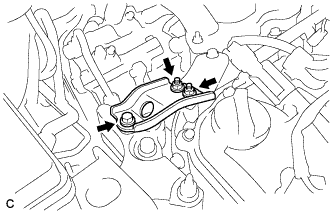 |
Remove the bolt and 2 nuts, and remove engine mounting stay NO.2 RH.
| 11. Remove Front Wiper Arm Head Cap |
 |
Remove the 2 front wiper arm head caps.
| 12. Remove Front Wiper Arm & Blade Assembly RH |
 |
Remove the front wiper arm nut and front wiper arm & blade assembly RH.
| 13. Remove Front Wiper Arm & Blade Assembly LH |
 |
Remove the front wiper arm nut and front wiper arm & blade assembly LH.
| 14. Remove Hood to Cowl Top Seal |
 |
Disengage the 7 clips and remove the hood to cowl top seal.
| 15. Remove Front Side Panel Protector NO.1 LH |
 |
Disengage the pin and remove front side panel protector NO.1 LH.
| 16. Remove Cowl Top Ventilator Louver LH |
 |
Disengage the 11 claws and remove the cowl top ventilator louver LH as shown in the illustration.
| 17. Remove Front Side Panel Protector NO.1 RH |
 |
Disengage the pin and remove front side panel protector NO.1 RH.
| 18. Remove Cowl Top Ventilator Louver RH |
 |
Disengage the 5 claws and remove the cowl top ventilator louver RH as shown in the illustration.
| 19. Remove Windshield Wiper Motor & Link Assembly |
 |
Remove the 2 bolts and disconnect the windshield wiper motor & link assembly.
Disconnect the connector and clamp, and remove the windshield wiper motor & link assembly as shown in the illustration.
| 20. Remove Cowl Body Mounting Reinforcement RH |
 |
Remove the 3 bolts and remove the cowl body mounting reinforcement RH from the cowl top panel outer.
| 21. Remove Cowl Top Panel Outer |
 |
Disconnect the windshield deicer wire harness connector and disengage the 3 clamps, and detach them from the cowl top panel outer. (w/ Cold Area Specification)
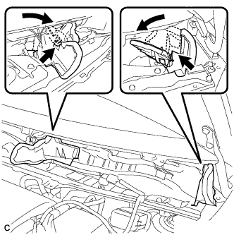 |
Disengage the clamps of the heater air duct splash shield seal No.2 and water guard plate RH, and bend each as shown in the illustration.
 |
Remove the 8 bolts and the cowl top panel outer.
| 22. Disconnect Fuel Vapor Feed Hose NO.1 |
 |
Slide the clamp and disconnect fuel vapor feed hose No.1.
| 23. Remove Air Cleaner Cap w/ Air Cleaner Hose |
 |
Disconnect the air flow meter connector. (*1).
Disconnect ventilation hose No.2. (*2).
Disconnect the hose band (*3)
Disengage the 3 clamps and remove the air cleaner cap w/ air cleaner hose.
| 24. Remove Air Cleaner Filter Element Sub-assembly |
Remove the air cleaner filter element from the air cleaner case.
| 25. Remove Air Cleaner Case |
 |
Remove the 3 bolts and clamp, and remove the air cleaner case.
| 26. Disconnect Transmission Control Cable Assembly |
 |
Remove the clip and nut, and disconnect the transmission control cable assembly.
| 27. Disconnect Check Valve to Connector Tube Hose |
 |
Slide the clamp and disconnect the check valve to connector tube hose from the intake air surge tank assembly.
| 28. Remove Front Tire |
| 29. Remove Column Hole Cover Silencer Sheet |
 |
Turn back the floor carpet, remove the 2 clips, and remove the column hole cover silencer sheet.
| 30. Disconnect Steering Intermediate Shaft Assembly NO.2 |
 |
Remove the bolt from steering intermediate shaft assembly No.2.
Slide steering intermediate shaft assembly No.2 toward the steering column assembly until the serrations of the steering intermediate shaft are visible.
 |
Put matchmarks on steering intermediate shaft assembly No.2 and the steering intermediate shaft.
Disconnect steering intermediate shaft assembly No.2 from the steering intermediate shaft.
| 31. Disconnect Steering Column Hole Cover Sub-assembly NO.1 |
 |
Push clip B toward the center of the cover, push down clip A, and disconnect steering column hole cover No.1 from the floor panel.
| 32. Remove Engine Under Cover NO.1 |
Remove the 6 bolts and 7 clips, and remove engine under cover No.1.
| 33. Remove Engine Under Cover |
Remove the 4 bolts and 4 screws, and remove the engine under cover.
| 34. Remove Engine Under Cover NO.2 |
Remove the 5 clips and engine under cover No.2.
| 35. Remove Engine Under Cover Rear LH |
Remove the 5 clips and the engine under cover rear LH.
| 36. Remove Engine Under Cover Rear RH |
Remove the 5 clips and the engine under cover rear RH.
| 37. Remove Fan & Alternator V Belt |
 |
Put a tool on the pulley set bolt of the tensioner, and turn the tensioner counterclockwise to loosen the tension.
Using a 5mm hexagon wrench, fix the tensioner as shown in the illustration and remove the belt.
| 38. Drain Engine Oil |
Remove the drain plug and drain the engine oil.
After draining the oil, install the drain plug with a new gasket.
| 39. Drain Coolant (Toyota Genuine Super Long Life Coolant) |
Loosen the radiator drain cock plug.
Remove the reserve tank cap and drain the coolant.
Loosen the cylinder block drain cock plug and drain the coolant from the engine.

| 40. Drain Automatic Transaxle Fluid |
 |
Remove the refill plug and gasket.
 |
Using a socket hexagon wrench 6, remove the overflow plug and gasket.
 |
Using a socket hexagon wrench 6, remove transmission oil filler tube NO.1 and drain the automatic transmission fluid.
|
Using a socket hexagon wrench 6, install transmission oil filler tube NO.1.
|
Install the overflow plug with a new gasket.
|
Install the refill plug with a new gasket.
| 41. Disconnect Heater Water Inlet Hose A |
 |
Slide the clamp and disconnect the heater water inlet hose.
| 42. Disconnect Heater Water Outlet Hose |
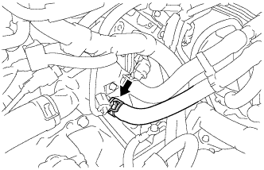 |
Slide the clamp and disconnect the heater water outlet hose.
| 43. Disconnect Engine Wire |
 |
Remove the bolt and clamp, and disconnect the ground wire.
 |
Remove the 2 bolts and 2 clamps, and disconnect the ground wire.
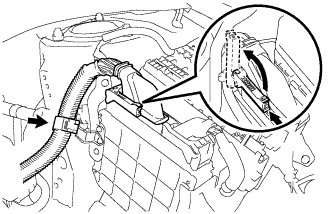 |
Disengage the clamp.
Raise the lock lever and disconnect the engine control computer connector.
Remove relay block cover upper NO.1 from the engine room relay block.
 |
Remove the 2 nuts.
Disengage the 2 clamps and 4 connectors, and disconnect the engine wire from the engine room relay block
| 44. Remove Radiator Grille Protector |
 |
Remove the 2 radiator grille protectors.
| 45. Remove Front Bumper Assembly |
 |
Using a flat-tip screwdriver, turn the pin hold clip 90° and remove the pin hold clip.
 |
Apply protective tape around the front bumper assembly.
Using a clip remover, remove the 3 upper clips.
Remove the 6 screws, 2 clips and 2 bolts.
 |
Pull the front bumper assembly outward from the vehicle to disengage the 8 claws (4 each on LH/RH).
Disconnect the connectors.
Pull the front bumper assembly toward the front of the vehicle and remove the front bumper assembly.
| 46. Remove Millimeter Wave Radar Sensor Assembly |
 |
Disconnect the connector.
Remove the 3 bolts and the millimeter wave radar sensor assembly.
| 47. Remove Millimeter Wave Radar Sensor Bracket NO.1 |
 |
Remove the 4 bolts and millimeter wave radar sensor bracket NO.1.
| 48. Remove Radiator Side Deflector LH |
 |
Disengage the 3 clips and guide, and remove the radiator side cover LH.
| 49. Remove Radiator Side Cover RH |
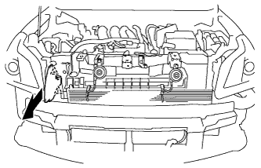 |
Disengage the 2 clips and remove the radiator side cover RH.
| 50. Disconnect Water Bypass Hose NO.2 |
 |
Remove the 2 bolts and 2 clamps, and disconnect water bypass hose NO.2 from the radiator support assembly.
| 51. Disconnect Hood Lock Assembly |
 |
Detach the hood lock control assembly from the 2 clamps.
 |
Remove the 3 bolts and disconnect the hood lock assembly.
| 52. Remove Radiator Support Upper |
Remove the 2 bolts and the UPR2 radiator supports.
| 53. Remove Radiator Support Cushion |
Remove the 2 radiator support cushions from fan shroud No. 2.
| 54. Remove Radiator Support Assembly |
 |
Disconnect the 2 horn assembly connectors.
 |
Remove the 4 bolts and radiator support assembly.
| 55. Disconnect Water Bypass Hose |
 |
Slide the 2 clamps and disconnect water bypass hose No.1 and water bypass hose No.3.
| 56. Remove Fan Shroud NO.2 |
 |
Detach the 2 clamps and disconnect the 2 horn assembly connectors from fan shroud No.2.
Remove the 2 bolts and separate fan shroud No.2 from the radiator assembly.
| 57. Disconnect Wire Harness |
 |
Disconnect the cooling fan motor connector and 2 wire harness clamps.
| 58. Disconnect Thermistor Assembly |
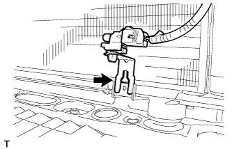 |
Detach the clip and disconnect the thermistor assembly.
| 59. Disconnect Oil Cooler Inlet Hose NO.1 |
 |
Slide the clamp and disconnect oil cooler inlet hose No.1.
| 60. Disconnect Oil Cooler Outlet Hose NO.1 |
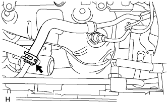 |
Slide the clamp and disconnect oil cooler outlet hose No.1.
| 61. Disconnect Radiator Hose NO.1 |
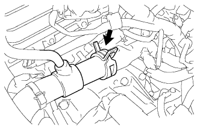 |
Slide the clamp and disconnect radiator hose NO.1.
| 62. Disconnect Radiator Hose NO.2 |
 |
Slide the clamp and disconnect radiator hose NO.2.
| 63. Remove Radiator Assembly |
Separate the cooler condenser assembly from the fan shroud.
 |
Remove the radiator assembly together with the fan shroud from the vehicle.
Remove the 2 radiator supports lower.
| 64. Remove Radiator Reserve Tank Assembly |
 |
Remove the 2 bolts and radiator reserve tank assembly.
| 65. Disconnect Suction Hose Sub-assembly |
 |
Disengage the clamp.
Disconnect the connectors.
 |
Remove the bolt and disconnect the suction hose.
Remove the O-ring from the suction hose.
| 66. Disconnect Discharge Hose Sub-assembly |
 |
Remove the bolt and disconnect the discharge hose.
Remove the O-ring from the discharge hose.
| 67. Disconnect Fuel Main Tube |
 |
Disengage the claw and remove EFI fuel pipe clamp No.1.
 |
Pinch the retainer of the fuel tube connector from both sides with your fingers, pull out the fuel tube connector and disconnect the fuel tube from the pipe.
Cover the fuel connector and pipe connection with plastic bags to prevent foreign matter from entering.
| 68. Remove Exhaust Pipe Assembly Center |
 |
Disconnect the oxygen sensor and, using SST, remove the oxygen sensor.
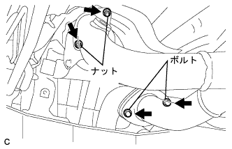 |
Remove the 2 bolts and 2 nuts, and remove the exhaust center pipe assembly.
Remove the 2 gaskets.
| 69. Remove Exhaust Pipe Assembly Front |
 |
Disconnect the NO.2 oxygen sensor connector and, using SST, remove the oxygen sensor.
 |
Remove the 2 bolts and exhaust pipe bracket.
 |
Remove the 2 nuts and exhaust pipe assembly front.
Remove the gasket.
| 70. Disconnect Transmission Control Cable Assembly (Rear Mounting Position) |
 |
Remove the bolt and disconnect the transmission control cable support from the engine mounting insulator rear.
| 71. Remove Front Axle Shaft Nut LH |
 |
Set the SST aligned with the groove of the front drive shaft assembly LH, and using a hammer, unstake the front axle hub nut LH.
Using a socket wrench (30mm), remove the front axle hub nut LH.
| 72. Remove Front Axle Shaft Nut RH |
| 73. Disconnect Speed Sensor Front LH |
 |
Remove the 2 bolts and disconnect the speed sensor wire and flexible hose.
 |
Remove the bolt and disconnect the speed sensor front LH from the steering knuckle.
| 74. Disconnect Speed Sensor Front RH |
| 75. Disconnect Tie Rod End LH |
Remove the cotter pin and castle nut.
 |
Using SST, disconnect the tie rod end LH from the steering knuckle.
| 76. Disconnect Tie Rod End RH |
| 77. Disconnect Front Suspension Arm Sub-assembly Lower NO.1 LH |
 |
Remove the 1 bolts and 2 nuts.
Push down the front suspension lower arm No.1 LH and disconnect it from the front lower ball joint LH.
| 78. Disconnect Front Suspension Arm Sub-assembly Lower NO.1 RH |
| 79. Disconnect Front Stabilizer Link Assembly LH |
 |
Remove the nut and disconnect the stabilizer link assembly from the shock absorber assembly.
| 80. Disconnect Front Stabilizer Link Assembly RH |
| 81. Disconnect Front Axle Assembly LH |
 |
Using a plastic hammer, lightly tap the end of the front drive shaft assembly LH to disengage the front drive shaft assembly LH from the front axle assembly LH.
Push the front axle assembly LH toward the outside of the vehicle and pull the front drive shaft assembly LH out of the front axle assembly LH.
| 82. Disconnect Front Axle Assembly RH |
| 83. Remove Front Drive Shaft Assembly LH |
 |
Using SST, remove the drive shaft assembly LH.
| 84. Remove Front Drive Shaft Assembly RH |
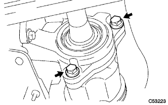 |
Remove the 2 bolts and drive shaft assembly RH from the bearing bracket.
| 85. Disconnect Engine Mounting Insulator Front |
 |
Remove the bolt and nut, and disconnect the engine mounting insulator front from the engine mounting bracket front.
| 86. Disconnect Engine Mounting Insulator Rear |
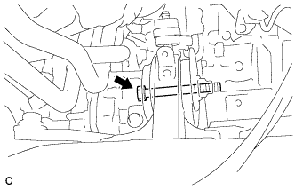 |
Remove the bolt and disconnect the engine mounting insulator rear from the engine mounting bracket rear.
| 87. Remove Front Suspension Member Reinforcement LH |
 |
Remove the 4 bolts and front suspension member reinforcement LH.
| 88. Remove Front Suspension Member Reinforcement RH |
 |
Remove the 4 bolts and front suspension member reinforcement RH.
| 89. Remove Front Cross Member Sub-assembly |
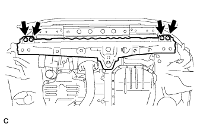 |
Remove the 4 bolts and front cross member.
| 90. Remove Front Suspension Crossmember Sub-assembly |
Set the engine lifter.
 |
Remove the 8 bolts, suspension crossmember, and front suspension member braces rear RH and LH.
| 91. Remove Engine Assembly w/ Transaxle |
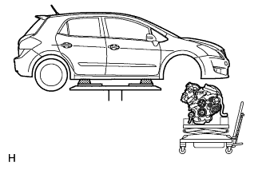 |
Set the height-adjustable attachment and plate lift attachment, and set the engine lifter.
 |
Remove the 2 bolts and 2 nuts, and disconnect the engine mounting insulator RH from the engine mounting bracket RH.
 |
Remove the bolt and nut, and disconnect the engine mounting insulator LH from the engine mounting bracket LH.
Operate the engine lifter and slowly remove the engine assembly w/ transaxle from the vehicle.
| 92. Install Engine Hangers |
 |
Install the engine hangers in the positions shown in the illustration.
Using an engine sling device and chain block, hold the engine.
| 93. Remove Engine Wire |
| 94. Remove Engine Mounting Bracket Front |
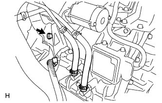 |
Remove the bolt and disconnect the oil cooler tube.
 |
Remove the 3 bolts and the engine mounting bracket front.
| 95. Remove Manifold Stay |
 |
Remove the 2 bolts and nut, and remove the manifold stay.
| 96. Remove Engine Mounting Bracket Rear |
 |
Remove the 3 bolts and the engine mounting bracket rear.
| 97. Remove Drive Shaft Bearing Bracket |
 |
Remove the 3 bolts and the drive shaft bearing bracket.
| 98. Remove Starter Assembly |
 |
Disconnect the connector.
Open the terminal cap cover.
Remove the nut and disconnect terminal B.
Remove the bolt (A in the illustration) and disconnect the wire harness clamp bracket.
Remove the 2 bolts (B in the illustration) and the starter assembly.
| 99. Remove Exhaust Pipe Support Bracket NO.1 |
 |
Remove the 2 bolts and exhaust pipe support bracket No.1.
| 100. Remove Flywheel Housing Under Cover |
 |
Remove the 2 bolts and the flywheel housing under cover.
| 101. Remove Automatic Transaxle Assembly |
 |
Remove the bolt and the transmission breather pipe from the engine cylinder head.
 |
Remove the 6 torque converter set bolts.
 |
Remove the 11 bolts and the transaxle.
| 102. Remove Drive Plate & Ring Gear Sub-assembly |
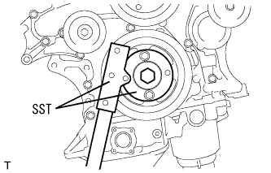 |
Using SST, hold the crankshaft.
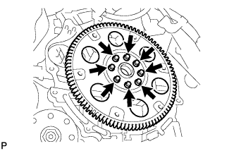 |
Remove the 8 bolts, and remove the rear drive plate spacer, drive plate ring gear and front drive plate spacer.
| 103. Install Engine Stand |
Install the engine assembly to the engine stand.
| 104. Remove Engine Hangers |
|
Remove the engine hangers from the engine assembly.
| 105. Remove Idler Pulley Sub-assembly NO.2 |
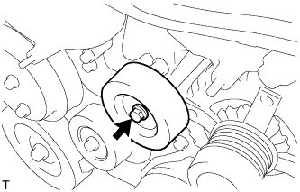 |
Remove the bolt and idler pulley No.2.
| 106. Remove Cooler Compressor w/ Magnetic Clutch Assembly |
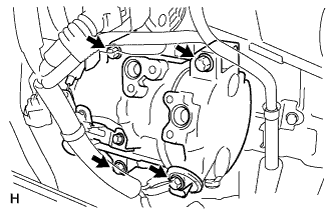 |
Remove the 4 bolts and the cooler compressor w/ magnetic clutch assembly.
| 107. Remove Alternator Assembly |
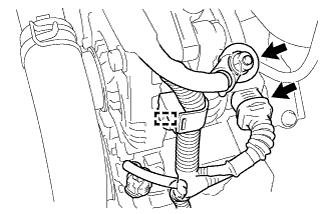 |
Disconnect the 2 connectors.
Remove the terminal cap.
Remove the nut and disconnect the harness from the +B terminal.
Detach the 1 clamps.
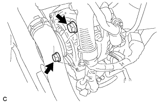 |
Remove the 2 bolts.
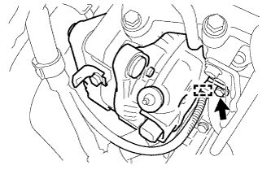 |
Remove the bolts and clamp, and remove the alternator assembly.
| 108. Remove Surge Tank Stay NO.1 |
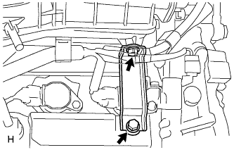 |
Remove the 2 bolts and surge tank stay No.1.
| 109. Remove Throttle Body Bracket |
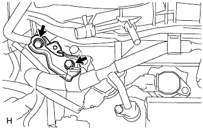 |
Remove the 2 bolts and the throttle body bracket.
| 110. Remove Intake Air Surge Tank Assembly |
 |
Disconnect the vacuum hose from the throttle body assembly (*1).
Slide the 2 clamps and disconnect water bypass hose No.2 and water bypass hose No.3 from the throttle body assembly (*2).
Disconnect the throttle motor connector from the throttle body assembly (*3).
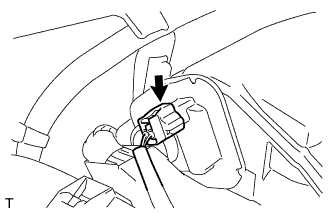 |
Disconnect the air control valve connector from the intake air surge tank.
 |
Remove the 2 nuts from the intake air surge tank. (*1)
Using a socket hexagon wrench (5mm), remove the 4 bolts. (*2)
Remove the intake air surge tank assembly.
| 111. Remove Air Surge Tank to Intake Manifold Gasket |
Remove the air surge tank to intake manifold gasket.
| 112. Remove Engine Mounting Stay NO.2 RH (LH Side Installation Position) |
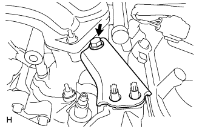 |
Remove the bolt and engine mounting stay No.2 RH.
| 113. Remove Intake Manifold |
 |
Remove the 6 bolts and 4 nuts, and remove the intake manifold.
| 114. Remove Intake Manifold to Head Gasket NO.1 |
Remove intake manifold to head gasket NO.1.
| 115. Remove Intake Manifold to Head Gasket NO.2 |
Remove intake manifold to head gasket NO.2.
| 116. Remove Exhaust Manifold Sub-assembly RH |
Disconnect the air fuel ratio sensor connector.
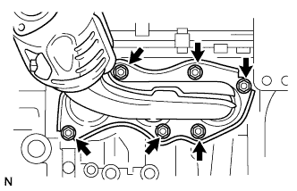 |
Remove the 6 nuts and the exhaust manifold RH.
| 117. Remove Exhaust Manifold to Head Gasket |
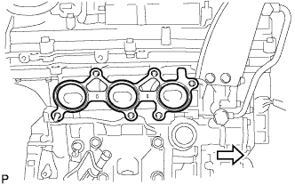 |
Remove the exhaust manifold to head gasket.
| 118. Remove Oil Level Gauge Guide |
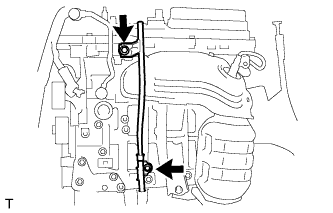 |
Remove the oil level gauge.
Remove the 2 bolts, and remove the oil level gauge guide and oil level gauge guide No.2.
Remove the O-rings from the oil level gauge guide and oil level gauge guide No.2.
| 119. Remove Manifold Stay NO.2 |
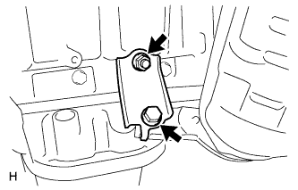 |
Remove the bolt and nut, and remove manifold stay No.2.
| 120. Remove Exhaust Manifold Heat Insulator NO.2 |
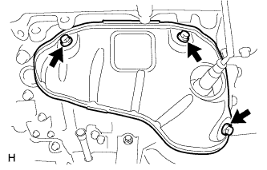 |
Remove the 3 bolts and exhaust manifold insulator No.2.
| 121. Remove Exhaust Manifold Sub-assembly LH |
Disconnect the air fuel ratio sensor connector.
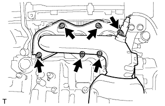 |
Remove the 6 nuts and the exhaust manifold LH.
| 122. Remove Exhaust Manifold to Head Gasket LH |
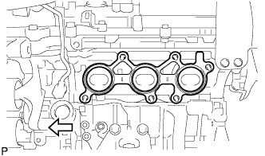 |
Remove the exhaust manifold to head gasket LH.
| 123. Remove V-ribbed Belt Tensioner Assembly |
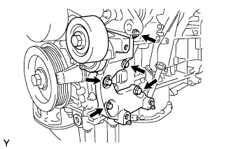 |
Remove the 5 bolts and the V-belt tensioner assembly.
| 124. Remove Timing Gear Cover NO.2 |
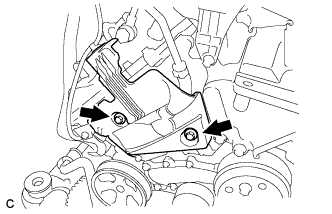 |
Remove the 2 bolts and timing gear cover No.2.
| 125. Remove Water Pump Pulley |
 |
Using SST, hold the water pump pulley.
Remove the 4 bolts and the water pump pulley.
| 126. Remove Engine Mounting Bracket Front NO.1 LH |
 |
Remove the 6 bolts and remove engine mounting bracket front No.1 LH from the engine assembly.
| 127. Remove Ignition Coil Assembly |
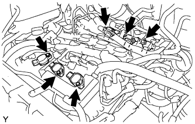 |
Remove the 6 bolts and the 6 ignition coil assemblies.
| 128. Remove Radio Setting Condenser |
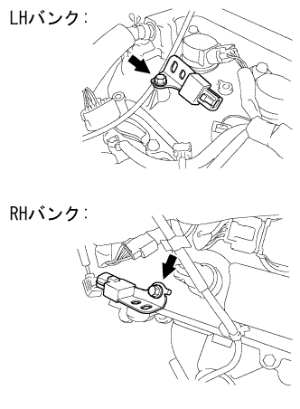 |
Remove the 2 bolts and the 2 radio setting condensers.
| 129. Remove Vacuum Switching Valve Assembly NO.1 |
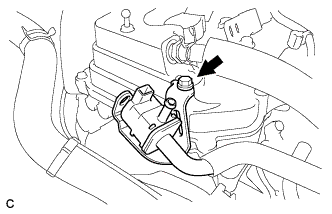 |
Remove the bolt and vacuum switching valve assembly No.1.
| 130. Remove Crankshaft Pulley |
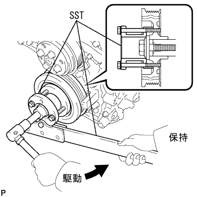 |
Using SST, hold the crankshaft pulley.
Loosen the crankshaft pulley bolt.
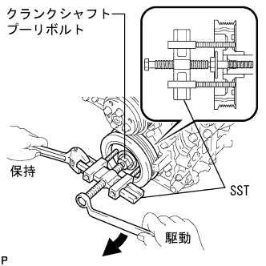 |
Screw the crankshaft pulley bolt 2-3 threads into the crankshaft.
Using SST, remove the crankshaft pulley.
| 131. Remove Water Inlet Housing |
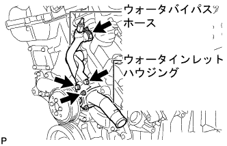 |
Disconnect the water bypass hose.
Remove the 2 bolts and nut, and remove the water inlet housing.
 |
Remove water inlet housing gasket NO.1 and the O-ring.
| 132. Remove Oil Pan Sub-assembly NO.2 |
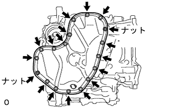 |
Remove the 16 bolts and 2 nuts.
 |
Using an oil pan seal cutter, remove oil pan No.2.
| 133. Remove Oil Strainer Sub-assembly |
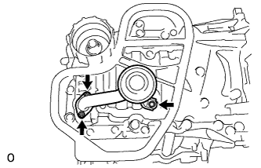 |
Remove the bolt and 2 nuts, and remove the oil strainer and oil strainer gasket.
| 134. Remove Oil Pan Sub-assembly |
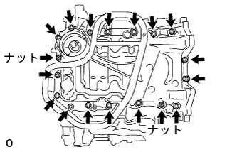 |
Remove the 16 bolts and 2 nuts.
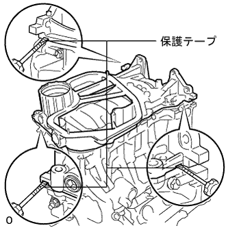 |
Using a screwdriver with its tip wrapped in protective tape, pry the portions shown in the illustration to remove the oil pan.
 |
Remove the 2 oil pan O-rings.
| 135. Remove Oil Pipe NO.1 |
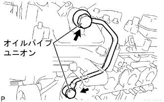 |
Remove the 2 oil pipe unions and oil pipe No.1.
Remove the oil control valve filter LH and 3 gaskets.
| 136. Remove Oil Pipe |
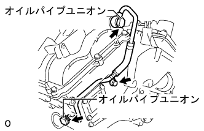 |
Remove the bolt and 2 oil pipe unions, and remove the oil pipe.
Remove the oil control valve filter RH and 3 gaskets.
| 137. Remove Cylinder Head Cover Sub-assembly LH |
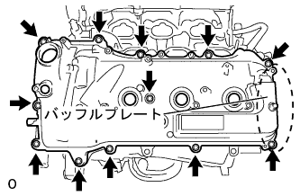 |
Remove the 12 bolts and cylinder head cover seal washers, and remove the cylinder head cover LH.
Remove the cylinder head cover gasket LH from the cylinder head cover LH.
 |
Remove the 3 gaskets from camshaft bearing caps (No.3, No.4, No.7).
| 138. Remove Cylinder Head Cover Sub-assembly |
 |
Remove the 12 bolts and cylinder head cover seal washers, and remove the cylinder head cover.
Remove the cylinder head cover gasket from the cylinder head cover.
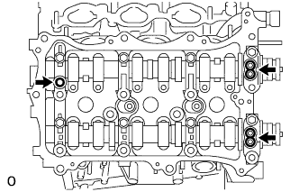 |
Remove the 3 gaskets from camshaft bearing caps (No.1, No.2, No.7).
| 139. Remove Timing Chain or Belt Cover Sub-assembly |
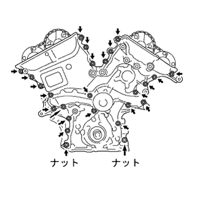 |
Remove the 23 bolts and 2 nuts shown in the illustration.
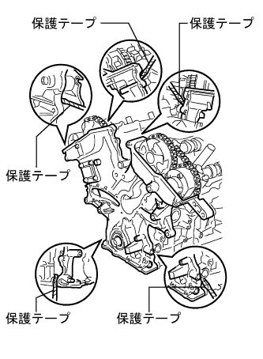 |
Using a screwdriver with its tip wrapped in protective tape, pry the portions shown in the illustration to remove the timing chain (belt) cover.
 |
Remove the oil pump gasket from the cylinder block.
| 140. Remove Timing Gear Case or Timing Chain Case Oil Seal |
Using a screwdriver with its tip wrapped in protective tape, remove the timing gear case oil seal.
| 141. Set No. No.1 Cylinder to TDC/Compression |
Turn the crankshaft clockwise to align the mark on the crank angle sensor plate with the RH block bore center line (TDC/compression).
Check that the timing marks of each camshaft timing gear are aligned with the timing marks of the camshaft bearing caps.
| 142. Remove Chain Tensioner Assembly NO.1 |
Move the stopper plate upward to release the lock, and push the plunger in completely.
Move the stopper plate downward to lock it, and insert a clip into the hole of the stopper plate.
Remove the 2 bolts and chain tensioner assembly No.1.
| 143. Remove Chain Tensioner Slipper |
| 144. Remove Chain Sub-assembly |
Turn the crankshaft counterclockwise 10° to loosen the chain on the crankshaft timing gear.
Remove the chain from the crankshaft timing gear and place it on the crankshaft.
Turn the camshaft timing gear assembly of the RH bank clockwise (approximately 60°) to align it with the position shown in the illustration. (Loosen the chain between the intermediate banks.)
Remove the chain.
| 145. Remove Idle Sprocket Assembly |
 |
Using socket hexagon wrench 10, loosen idle shaft NO.2 and remove the idle sprocket assembly and idle gear shaft NO.1.